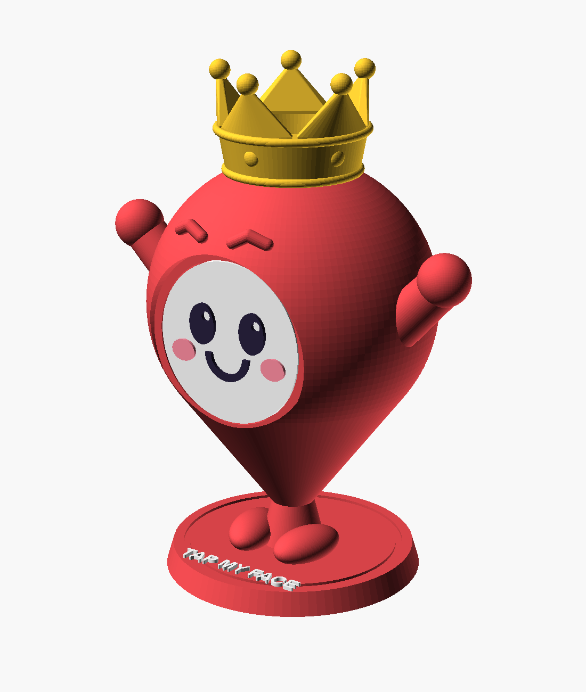
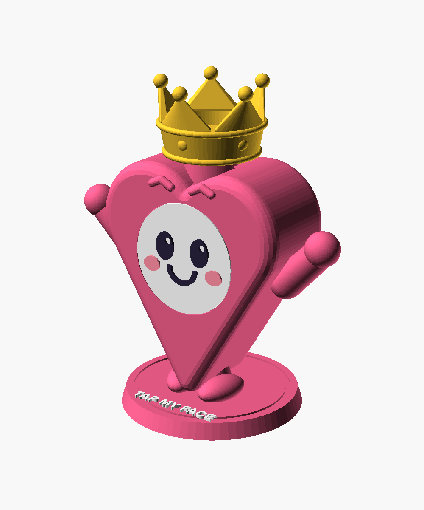
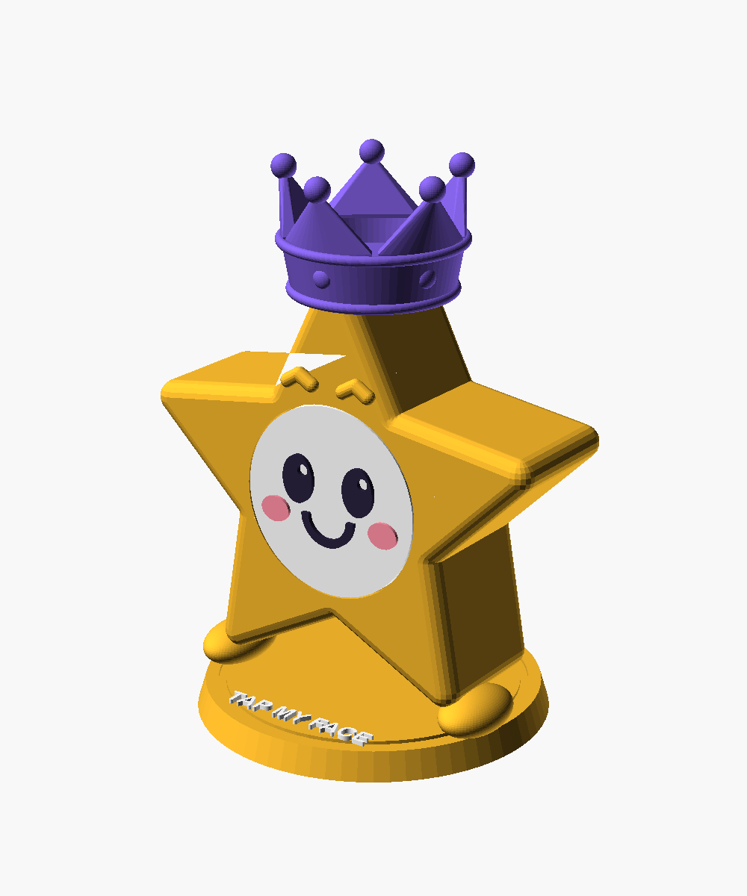
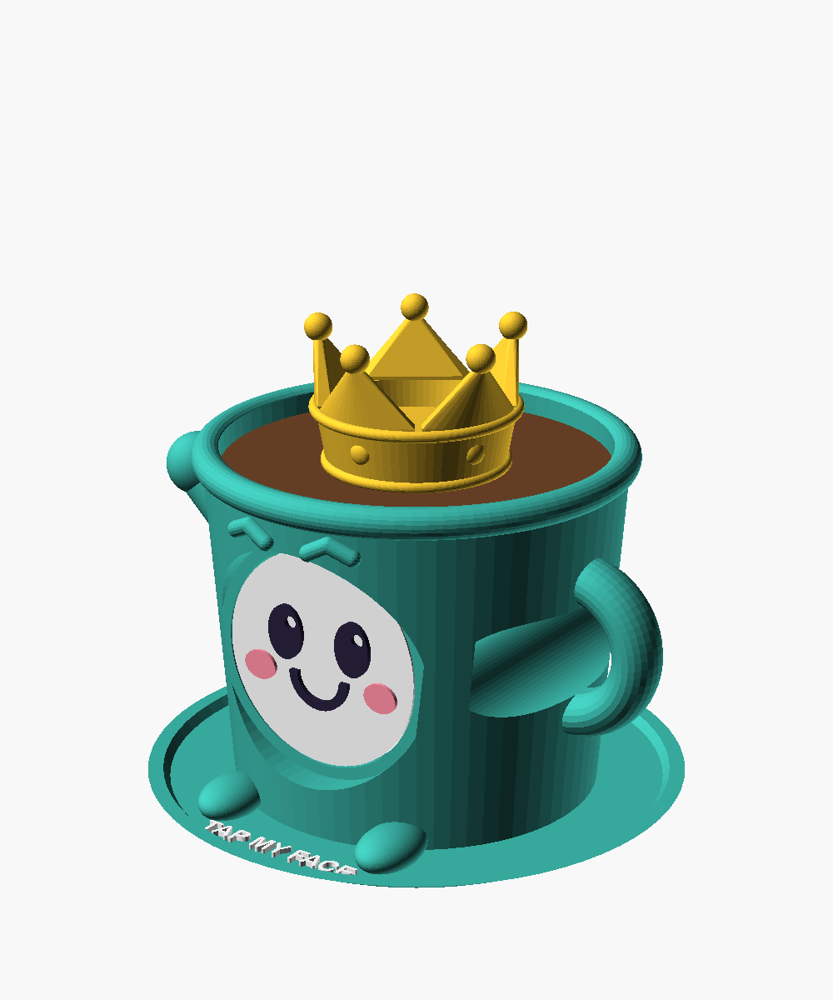
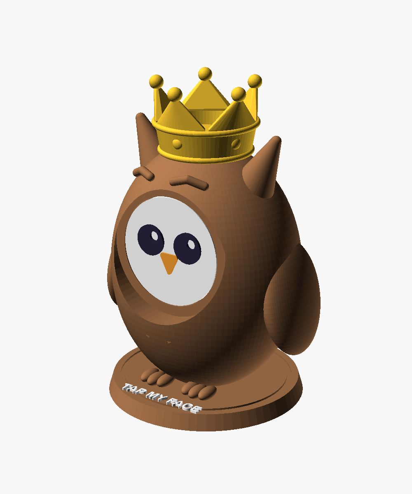

Pinny Full design →
The map pin · red
A saved place come to life; the pin's hole is its face.
- Says "places" the moment you see it
- Matches the pins in the app
- Narrow waist is the fragile spot
Five characters built the same way as Pinny: the white face is the tap spot (NFC tag 2 mm behind it), the base says "TAP MY FACE", and the same peg on top takes any city's accessory. All shown wearing Charlotte's crown.

A saved place come to life; the pin's hole is its face.

"Fav" means favorite. A puffy heart for the places you love, cheering with both arms.

A gold star, the universal sign of a reward. The side points are its arms and the bottom points are its legs.

A happy cup waving with one arm, the handle on the other side, wearing its crown in the coffee.

The wise local who knows all the best spots. The owl's facial disc is the tap face, with big eyes and an orange beak.
Short answer: genuine NXP NTAG215 (or NTAG213), round, 30 mm (not 25 mm), paper or PET stickers, with a non-metal backing. They're the same tags your Register stickers use, just bigger.
| What to pick | Why |
|---|---|
| 30 mm round instead of 25 mm | Read range depends mostly on the size of the tag's antenna. The face pocket fits a 30 mm tag, and the bigger coil reads from farther away and at sloppier angles. |
| Genuine NXP NTAG213/215 | The chips iPhones read best. Cheap "NTAG215-compatible" clones are the usual cause of tags that work on one phone and not another. Buy from a seller that says NXP. |
| Not "anti-metal" / ferrite tags | Those are only for sticking on metal. On plastic they are thicker and no better. |
| Lock the tag after writing it | Important: an unlocked tag can be rewritten by anyone with a free NFC app, sending your customers to a different link. Write the store's link, test it, then lock it (permanent lock or password) in NFC Tools. |
| Keep it close and clear | The face is now 2 mm thick, so the tag sits 2 mm from the phone. No metal, magnets, foil or metallic paint near it; that includes metal-filled filaments (regular and silk PLA are fine). |
iPhones read with the top edge of the phone, Android phones with the middle of the back. "TAP MY FACE" covers both. A small card at the register ("Touch the top of your phone to Pinny's face") helps for the first week.